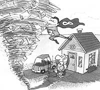
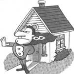

HOME LAW
In a new column, MOTHER provides some practical solutions to basic legal problems.
If you think that lawyers get paid a highly inflated rate, you're in good company. Recent polls have uniformly designated the profession of law as one of the least admired in the workforce. So whether you are interested in representing yourself a little better or are just curious about some of the basics, here's a short primer on two important legal areas. - MOTHER
Bad weather hits your part of the country and you find your land flooded, your house and possessions completely burned, or the area leveled by a tornado or flattened by a hurricane.
The plant closes and you are laid off. Between savings and credit cards you are able to keep food on the table, but you have missed a couple of mortgage payments. The credit line backing up your checking account is at its limit, as is the equity line of credit you intended to use for the kid's college education. You were injured at work and the insurance paid only part of the costs. You are facing constant calls and harassing letters from collection agencies and lawyers.
The scenarios described above are all too familiar these days. With the slow economic recovery and the threat of higher taxes, Americans feel as if their wallets are being wrung dry of that last dollar bill. Some people struggle for years and survive. Few get lucky and win the lottery. Some turn their fortunes around, but only after changing careers or leaving their homes for another part of the country.
There is an alternative, however, and it is one that our Founding Fathers thought was so important that they wrote it right into the main body of the Constitution of the United States. (They didn't even wait for the Bill of Rights to come along many years later.) That alternative is bankruptcy.
Despite the negative connotations that have been associated with the word in the past, more and more Americans are finding that bankruptcy-and the fresh start it brings-empowers them to face the future with hope and the knowledge that they are productive citizens contributing to the good of their families and society. Consider the alternative that was practiced in England during the 17th century (from which our Founding Fathers came): debtors were thrown in prison until the debt was paid. Those who did not pay faced the prospect of "transportation"that is, being sent in a prison ship to mean, nasty places like Australia, New Zealand, or America to work off the debt in "the colonies:'
We no longer have debtor's prison. What sense does it make keeping someone who wants to work from working? We also no longer have "transportation:" Where would the government send people? Siberia? Mars? Bankruptcy allows people to get a fresh start by keeping their existing creditors at bay and allowing industrious Americans to get back to work, pay their new creditors, pay their taxes, and join mainstream America as productive citizens once more.
Bankruptcy allows people with more debt than they can presently repay (we'll call them "debtors") to take charge of their lives. The two most important aspects of bankruptcy are the first and last things that occur in a bankruptcy case-and are the things that allow a debtor to take control of his or her life. The first is the "automatic stay"; the second, the "discharge."
A "stay" is a stop order, which is put in place by the federal laws as soon as the first papers, called the "petition," are filed with the bankruptcy court. This stay is a federal stop order that freezes all the lawsuits and actions by creditors to collect debts. The stay stops evictions, foreclosure sales, and lawsuits. Perhaps best of all, it stops the nasty telephone calls. Collection agencies, when informed by the debtor that a petition has been filed, can no longer call or write to the debtor demanding collection of a debt. Instead, they must deal with the debtor's lawyer.
The stay may be permanent or temporary, depending on the circumstances of the case. But in any event, the automatic stay gives a debtor breathing room from his creditors by stopping all the actions that creditors may take against the debtor to enforce an outstanding debt.
The second most important aspect of a bankruptcy filing is the "discharge:" The discharge is the last-and most sought after-event that occurs in a bankruptcy case. When a debt is discharged, it is legally canceled. No person or entity can try to collect that debt in the future. The debtor can earn a living without the fear that creditors will attack his future paychecks, can save money without the fear that assets in bank accounts will be seized, and can plan for the future without fear that the past will make the future unbearable.
The theory here is that if debtors could not get relief from past debts, they would never try to earn a living in the future, for fear that future earnings would be taken.
The law encourages people to plan for a constructive future by allowing debtors in bankruptcy to discharge their past debts.
Keep in mind, however, that debts are not discharged unless they are "old," remaining unpaid for a tax return filed more than three years before the bankruptcy filing. Similarly, certain student loans will not be discharged unless the first payment on the loan was due more than seven years prior to the bankruptcy filing.
A third category of debts that will not be discharged are alimony and support payments. The property aspects of a divorce settlement may be discharged, but the alimony and support aspects may not be discharged. A fourth category of debts are those that are fraudulent. An example of fraud may include a material misrepresentation on a loan application-overstating one's income or assets, for instance.
In many circumstances debtors can file a bankruptcy petition and be able to keep their house, household goods and furnishings, an automobile, and the tools of their trade, making a fresh start in life that much easier. Exactly which items a debtor may keep is determined by a combination of federal and state laws referred to as the "exemption" laws. The generally understood theory about bankruptcy is that a debtor must "liquidate," or sell all possessions and distribute the proceeds of the sale to creditors. But the federal bankruptcy laws exempt various types of property from the liquidation process, so long as the property does not exceed a certain value.
A FRESH START Bankruptcy allows people with more debt than they can presently repay to take charge of their lives-to be productive again.
Believe it or not, the tax laws in bankruptcy also help a debtor keep his house. If the trustee sells the house, the trustee must pay the federal income taxes resulting from the sale. In our example, if the house had been purchased by a couple 20 years ago for a mere $50,000 and sold this year for $150,000, the taxes on the capital gains of $100,000 (approximately 1/3 of that amount, or $33,000) would have to be paid by the trustee out of the sales proceeds. So the trustee will not force the sale of a debtor's house worth $150,000 unless the equity after payment of the mortgage is more than the combination of the debtor's exempt equity ($15,000), the transaction costs (estimated at 10 percent, or $15,000 in our example), and the capital gains tax ($33,000 in our example). In our example of a house with a fair market value of $150,000, the available equity would have to exceed $63,000 before the trustee forces a sale. Therefore, a debtor with a large mortgage may be able to keep his house, despite the filing of bankruptcy.
In most cases, in order to keep a house, the mortgage must be current. If payments are not current, the mortgage holder may apply for permission to begin a foreclosure based on the debtor's failure to pay currently. So if faced with the choice of paying a mortgage payment or paying other creditors, the debtor would make sure that the mortgage is paid.
Many of us have heard about different "chapters" in bankruptcy, including Chapter 7, Chapter 11, and Chapter 13. So far we've been discussing Chapter 7, also referred to as a "straight" bankruptcy. A Chapter 13 is a "workout" for individuals. A Chapter 11 is a "workout" for corporations or individuals with large debts.
A workout differs from a straight bankruptcy by allowing a debtor to make payments over time. This is particularly useful if a debtor is behind on a mortgage or equipment loan and wants to keep the property or equipment. A workout allows a debtor to make current payments and catch up on the back payments over a period of time, usually three to five years. If the workout provisions are deemed fair by the court, the creditors may be forced to accept the plan, even if they don't agree with all of its terms. The ability to propose a workout is a powerful tool to help a debtor keep his or her house.
Like a repossession or foreclosure, the filing of a bankruptcy is shown on a debtor's credit report. So why would anyone choose bankruptcy over foreclosure or repossession? The difference is this: there can be no more lawsuits or late charges on old debts after the date of the bankruptcy filing. After a foreclosure, the creditor may obtain a judgment against the debtor, which can be effective against the debtor for a long period of time. A bankruptcy filing after the foreclosure or repossession, cuts off the ability of the creditor to take assets for such an extended period of time.
Will a person who files for bankruptcy ever again be able to get a credit card or mortgage? The answer here is surprisingly, and overwhelmingly, yes! Consider this: The day before filing for bankruptcy, the debtor has huge debts piled up, has no ability to make monthly payments, and has the ability to file bankruptcy and get the debts discharged. A creditor views this situation as an unreasonable risk.
On the other hand, the day after the discharge is granted, the debtor has no debt (it has all been discharged), has the ability to make current payments on new debt (if he has a job), and usually cannot file bankruptcy for another six years (thus allowing new creditors at least six years to seek satisfaction of new debts). In other words, the debtor is much more "credit worthy" the day after declaring than he was the day before. Part of the idea behind the fresh start is to wipe clean the debtor's credit report. The big myth is that we all have ratings and that they're just like a school report card. Individuals do not have a credit rating. What they have is a "credit history."
Reported by several companies nationally, including TRW, this history sets a person's payment history: the record of whether the individual made monthly payments or not and whether the payments were made in a timely manner. A person with perfect credit has a credit report that shows that all monthly payments were made currently. A late payment is shown with a number, showing the number of months late the payment was made. The greater the number of late payments, the worse the credit report. Events such as foreclosures and repossessions are also noted.
So while the fact that a person filed for bankruptcy may appear on a credit record for as long as 10 years, a person may be able to reestablish credit to obtain a mortgage within two years. Of course, normal underwriting requirements must still be met, but, if after filing bankruptcy a debtor managed to save a large-enough down payment, established a good credit rating, and had a good job, he or she would stand a good chance of qualifying.
Finally, debtors often ask about the moral obligations associated with filing for bankruptcy. Clearly the decision is very real and personal. I remind clients they are free to repay clients later, when business gets better and the prospect of losing one's house or business passes. The difference is you send the check or money order when you have the ability to do so, not when someone else demands payment.
There is no one solution for debtors in this rapidly changing age. Bankruptcy may not be the answer to all of your problems. But more and more often it is being accept ed as a reasonable alternative in this changing world.
By Frank Brown
Which of he following five transactions are contracts: buying a newspaper, getting married, using your credit card, making a phone call, or sharing a car pool?
If you answered yes to all five, you were right. That's because each of those transactions falls within the definition of a contract, which is "an agreement upon sufficient consideration to do or not do a particular thing:"
Here's how that definition works out in a sampling of those types of transactions:
When you buy a newspaper, the sufficient consideration is the price of the paper. For it, the newspaper boy agrees to do a particular service-namely, hand over today's copy of the Daily Planet (or whatever paper it is that you are buying). If you shortchange him or if he hands over a copy of yesterday's Tribune, that's a breach of the contract.
When you get married, the sufficient considerations are your emotional, physical, and financial services. For it, your spouse agrees to do a particular thing: provide equivalent services for you.
When you make a phone call, the sufficient consideration is the number of coins you put in the slot. For it, the telephone company agrees to do a particular thing: put you through clearly for three minutes to the local number called. If you use a slug, or the phone company connects you to a wrong number or a line heavy with static, that's a breach of the contract.
We are by tradition and practice a society based on contractual relations-from the informal and commonplace (switching on electric power for the TV, getting on a bus, ordering a hamburger) to the rigidly structured and significant (buying a house or car, taking out a bank loan, signing an employment contract). The legal definition of a contract is "an agreement upon sufficient consideration to do or not do a particular thing:" Comment legal authorities M. J. and J. S. Ross: "In civil law, the contract is the basic legal concept, the foundation of all legal relations:"
A CONTRACT SOCIETY We are by tradition a society based on contractual relations from ordering a hamburger to taking out a bank loan.
That's why common law considers contracts binding and enforceable in courts of law. Today's statutes on contracts, which have grown out of the common law, are incorporated in the Uniform Commercial Code (UCC), adopted by most states. Those states that have not subscribed to the UCC have enacted their own statutory versions of it. In all states, the law gives you the right to enter into contracts and to go the courts, if necessary, to have them carried out or to provide redress when breached.
What are the essential elements of a contract?
A. The offer. The offer is a promise to do (or not do) something specific in return for the other party or parties doing something specific (or not doing something specific). When you promise your brother-in-law you'll pay him X dollars to repair your plumbing if he promises to do the job by such-and-such a date, that's an offer.
B. The acceptance. This is when your brother-in-law agrees to your offer.
C. The consideration. Consideration is when you get something in return (repaired plumbing) for what you give (X dollars). Although there are some exceptions, without consideration for each party to an agreement, there's no contract.
These three essential elements apply whether a contract is implied or expressed. When all the terms are specifically expressed, that's an expressed contract. Your life insurance policy is an example. When the terms are not specifically expressed, but rather implied by the actions and behavior of the parties in certain circumstances, the law says a contract exists. That's an implied contract, the kind you enter into when you step into a cab.
How do I make my offer?
Any way-orally, in writing, even by sign language-provided the person to whom you're making the offer is aware that you're doing so. If you're making the offer by mail, it's a good idea to send it certified. Then you'll have proof that the person to whom you made the offer actually received it.
If I say to my brother-in-law (is a joke, I'll give you the house if you fix the plumbing" am I stuck with a contract?
No. The law does not regard an offer made in jest as valid.
How specific must I make my offer in order for it to be valid?
As specific as you can. When you offer your brother-in-law X dollars to repair your plumbing, it's wise to also specify when the job is to be done, who pays for the supplies, when your brother-in-law will receive payment, whether payment is subject to your approval of the job, and so on. An offer that's vague about who, what, when, or how much is not valid.
After I make an offer, do I have tire right to withdraw it?
Yes. You can withdraw it at any time before it's accepted. If you've seta deadline for acceptance, your offer is automatically withdrawn if it's not accepted by that deadline. If you don't set a deadline for acceptance, your otter expires within a reasonable time.
My brother-in-law rejected my offer.
Then a few days later, he said he's changed his mind and is ready to do the job. I told him, "Sorry, but the offer no longer stands." He says it does. Who's right?
You are. A rejection terminates an offer. Another offer must be made before he can accept. Contract negotiation is basically a matter of offers and counteroffers.
Does my offer, once it's accepted, automatically become part of the contract?
Not necessarily. An offer covers only basic terms (subject of the contract, price, and so on). It need not include all details, as anyone who's ever bought a house knows. Amendments to the offer can appear by mutual consent in the eventual contract.
My brother-in-lain wants his Plumbing fixed, and he's made me an offer. How do I accept the offer?
That depends on the type of contract that can be created by the offer.
Should your brother-in-law say, "I promise to pay you X dollars if you promise to repair my plumbing by such and such a date," he is offering you a bilateral contract-an exchange of mutual promises. You can accept a bilateral contract in any way that clearly communicates assent-a handshake will do; so will a nod or grunt.
But should your brother-in-law say, "I'll pay you X dollars when you finish repairing my plumbing," he's offering you a unilateral contract-one that becomes binding only on performance of a specific action (or actions). You can accept this offer only by completing the action (or actions) called for-in this case, repairing the plumbing.
On the basis of my brother-in-law's offer to pay me X dollars when I've repaired the plumbing, I began the job. Now he wants to take me off the job and give it to somebody else. Can he do it?
No. On a unilateral contract, such as this one, the person who makes the offer cannot withdraw it once the party to whom the offer has been made has begun to perform.
I want to accept an offer, but I want to make some changes. Okay?
Not okay. Your changes constitute a rejection. You'll have to negotiate with the person who made the offer and come to mutually acceptable terms in order to create a contract.
I had two weeks to accept an offer from my brother-in-law. I rejected it after one week. But a few days later I changed my mind and accepted. Since I got in my acceptance before the deadline, l think I have a contract. My brother-in-law says no. Who's right?
Your brother-in-law. Once you've made your rejection, the offer is no longer open, even though the deadline for acceptance has not been reached.
My brother-in law withdrew his offer while my acceptance was in the mail. Where do I stand?
If his offer came to you by mail, then your acceptance becomes effective the day you mailed it, not the day he received it. Your brother-in-law may not like it, but he has a contract.
On the other hand, if the offer did not come to you by mail, your acceptance only becomes effective on the date he receives it. Since he withdrew his offer before that date, there's no contract.
The Consideration Must the consideration be money?
No. It can be almost anything, even just promises made by each party. "I promise to teach you to play chess if you promise to teach me how to play the piano" contains the element of consideration necessary to create a contract.
What things cannot be regarded as consideration?
There are three major types of quid pro quo-the legal term for "something in return for something"-that the law does not look upon as consideration.
1. An illegal quid pro quo. If your brother-in-law promises you a percentage of the take if you promise to stash his marijuana, there's no consideration.
2. A quid pro quo arising out of moral obligation. If you promise to do something for your brother-in-law because he's done something for you for nothing, like taking your kids to the ball game, there's no consideration.
3. A quid pro quo involving the payment of a debt to a third party without receiving some benefit from that party. If your brother-in-law promises to repair your plumbing in return for your paying off part of his debt to the finance company, and you gain in no way from the finance company, there's no consideration.
My brother-in-law agreed to repair my plumbing for nothing. A few weeks after he finished the job, he asked for X dollars for his work. l say I don't have to pay. He says I do. Who's right?
You are. Consideration must be created at the same time a contract is made-not after and not before. Without consideration in this instance, you have no contract and you don't have to pay.
Not all contracts must be in writing. But putting it in writing helps prevent misunderstandings. Also keep in mind that there are some kinds of contracts that are not valid unless they are in writing. These vary from state to state; so when in doubt, put it in writing.
An easy way to create a contract is to put it in the form of a business letter. Prepare it in duplicate.
There are six elements to a contract and they must all be present in the letter if it is to be considered valid.
1. A definite offer:
Dear George:
I want you to inspect the plumbing in my house, located at the address on this letter, and make the necessary repairs. l want this work to be completed in 10 business days, commencing on May 17th of this year, during the hours from 10 A.M. to 4 P .M.
2. Consideration:
In return for material and labor supplied by you, l will pay you X dollars when you begin the job, and another X dollars when you finish it.
3. Duration of offer:
I will hold this offer open for 31 calendar days from the date of this letter. Should you fail to accept by that date, the offer will be automatically withdrawn.
4. Provision in case of partial performance or nonperformance:
In the event you do not begin the job on the date specified in this letter, the contract will be void. In the event you begin the job but do not finish it, the down payment is returnable to me on demand, and you will receive no further payment.
5. Other provisions:
Should any of the plumbing become defective within two years after you make your repairs, you will make additional repairs at no cost within three business days after I notify you of the defects.
6. Manner of acceptance:
If you agree to the terms set forth in this letter of agreement, kindly sign the attached copy and return it to me by mail or by hand.
Cordially yours,
(your signature)
Agreed:
Date:
George Simon
(George's signature)
Excerpted from The New Jacoby & Meyers Practical Guide to Everyday Law (Simon & Schuster) by Gail /. Koff. Copyright © 1994 by Gail J. Koff.
|
 Filling for bankruptcy can be a practical way to resolve outstanding debt and make a fresh start. |
 |
|